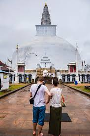
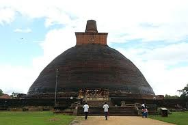
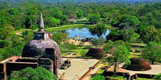
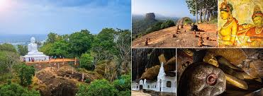
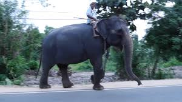
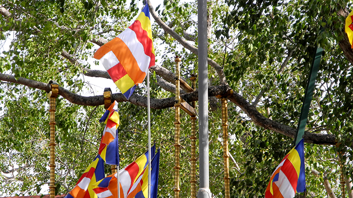
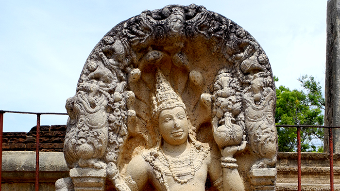
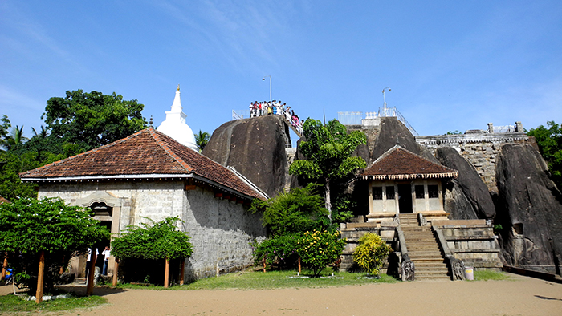

The sacred city of Anuradhapura is made up of monastic complexes dedicated to different sects of Buddhism including Theravada, Mahavihara, and Mahayana. It also has four monumental stupas (Jetavana, Ruyanvelisaya, Mirisavati and Abhayagiri).
Visitors can also see the ruins of fortified walls and a system of moats that protected the secular part of the city known as the Citadel. The outskirts of Anuradhapura were mainly used for agriculture. A remarkably advanced water hydraulic system allowed for year-round irrigation.
The main sights are contained in an archaeological park that requires quite a bit of walking from one site to another. Tickets cost $25 USD and are sold at the Archaeology Museum (open daily 8:30 a.m. to 5:30 p.m., closed Tuesdays).
|  |  |  |
|  |  |
Tuk-tuks are readily available to take you around to the different sites within the park. Many tuk-tuk drivers will say that you do not have to buy a ticket and they can get you in without one, but we recommend every visitor buy a ticket in order to support maintenance and restoration efforts.
We also suggest hiring an English-speaking tour guide, which will greatly enhance your knowledge and experience of Anuradhapura. The cost for a private guide varies, but prices generally fall between 850 and 1,000 LKR per day. Do not worry if you have not pre-booked a guide; tour guides are available at the entrance to the city.
Here is what to see and do in Anuradhapura!
|  | From the Ruwanwelisaya stupa complex, a five-minute walk along a sidewalk promenade, past picnickers and curious monkeys, brings visitors directly to the Sri Maha Bodhiya, or the Sacred Bodhi Tree. This sacred fig tree was propagated from the original Bodhi Tree under which Siddhartha Gautama achieved enlightenment. Siddhartha Gautama was the young Indian prince who founded the Buddhist religion. He is also referred to as Gautama Buddha, or known simply as the Buddha. While it is not uncommon to come across 2,000-year-old olive trees in Greece and the Middle East, the Bodhi Tree in Anuradhapura was planted in 288 B.C., making it the oldest living tree in the world! It is protected by a wall and revered by thousands of Buddhist pilgrims who come to pay it homage every day of the year. This impressive Bodhi Tree is one of the most sacred Buddhist relics in the world and is constantly being adorned with strings of prayer flags of blessings for protection, peace, and good fortune. |
|  | The Ratna Prasada, or Jewel Palace, is a monastic complex that was used by a sect of monks who practiced Mahayana Buddhism – a split from the Theravada school of thought that dominated Anuradhapuran religious life. King Kanitthatissa originally built Ratna Prasada in the first century. The building, which was an enormous structure in its heyday, was demolished during the Dravidian invasion around the 8th century. It was later rebuilt during the reigns of King Mihindu II and King Mihindu IV. One of the most noteworthy ruins of Ratna Prasada is an 8th century guard stone featuring a stone-carved naga king, or cobra king, holding vessels of abundant prosperity. In his left hand, he holds a pot of plenteousness. In the right, he holds a flower bouquet. The guard stone is in surprisingly excellent condition for a 1,200-year-old artefact, but it only represents half of the original pair that stood at the entrance to the monastery. These guard stones served as a means of protection over the monks of Ratna Prasada and their riches. |
Located at the north end of Anuradhapura is the Abhayagiri Vihara monastic complex. It was constructed by King Vattagamini in 88 B.C. and had the capacity to house 5,000 monks at a time. For nearly 600 years this was the largest monastery in Sri Lanka. The property, which extends over 500 acres, features Buddha statues, a stupa, one of the most outstanding moonstones in Sri Lanka (see below), and two very famous bathing pools, the Kuttam Pokuna. The “twin ponds,” as they are referred to, were constructed sometime between the 8th and 10th centuries B.C. Although their design might look simple enough, their plumbing is anything but. The Anuradhapurans were master engineers, as evidenced by their elaborate irrigation systems. The twin ponds feature underground ducts used to filter, fill, and empty the pools of water. In addition to their impressive plumbing, the design of the pools shows an eye for elegance. The monks could enter the pools using several sets of granite stairs, or sit along the edges and use vessels to bathe without having to submerge themselves. Contrary to their name, the twin ponds are not actually twins at all. One has an area of 6,732 square feet, while the smaller of the two measures 4,641 square feet. Gardens and a protective wall surround them. Even though visitors are not permitted to enter the water, it would be a shame to come to Anuradhapura and miss these beauties. |
|
A Sandakada Pahana, or Moonstone, is a distinctive Sri Lankan architectural element developed during the later years of the Anuradhapura Kingdom. A moonstone is a semi-circular carved slab of stone traditionally placed at the entrance of a Buddhist temple. The Sandakada Pahana at Abhayagiri Monastery dates back to 1st century B.C. A lotus blossom leaf is depicted in the center and is surrounded by rows of animals, each of which represents a stage of life. The elephants represent birth, bulls represent aging, lions represent disease, and the horses signify death. The swans, on the other hand, are believed to represent the forces of good and evil at play during one’s lifetime. The moonstone, then, is interpreted as a depiction of transcending worldly temptations and reaching the ultimate goal of Nirvana, which is symbolized by the lotus flower. The image of the lotus flower is found in architecture throughout Asia and is considered a sacred figure in Buddhism. The use of moonstones carried into the Polonnaruwa period. By then, the designs of the moonstones had changed slightly and were used at the foot of other buildings, not just at the entrances of Buddhist temples. |
Isurumuniya Vihara |
The Isurumuniya Vihara is a monastic complex carved out of solid rock. Built by King Devanampiyatissa, it was used to house 500 ordained Buddhist monks, or issira. Typically, issira were children from noble families in high castes willing to dedicate their lives to the teachings of Buddha and the path to enlightenment. Once they were ordained, they lived apart from the rest of Anuradhapuran society. Pilgrims bring flower offerings to a statue of a reclining Buddha, who is dressed in a bright crimson robe and housed within one of the shrines. The statue is surrounded with vibrant paintings depicting the Buddha’s life and legends of the Anuradhapurans’ ancient world. Giant boulders, some of which feature carvings of elephants and other figures, are scattered throughout the complex. There are also several shrines, pillars, statues, and a stupa. A museum inside the monastery displays carved stone fragments that once adorned the Isurumuniya complex. These include stone benches and carved portraits of the royal family dating back to the 6th and 7th centuries B.C. Visitors can climb the stairs to the top of the highest boulder for a fantastic view of the property. Near the Isurumuniya Vihara is the Magul Uyana, a complex of ancient bathing ponds said to be the place where Prince Saliya, son of King Dutugamunu, became enamored with a maiden girl named Asokamala. According to legend, the prince married his love despite her not being of noble blood, thus forfeiting the throne to his uncle. Their love is immortalized in a 6th century stone carving, which is housed in the museum. Admission to Isurumuniya Vihara is 200 LKR. |
Other Points of InterestAbayagiri Giant Pond |